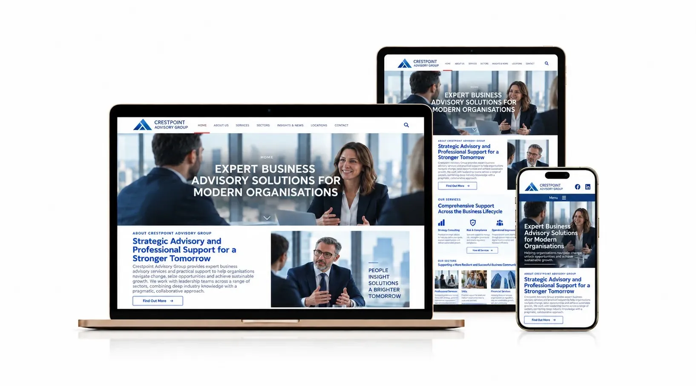
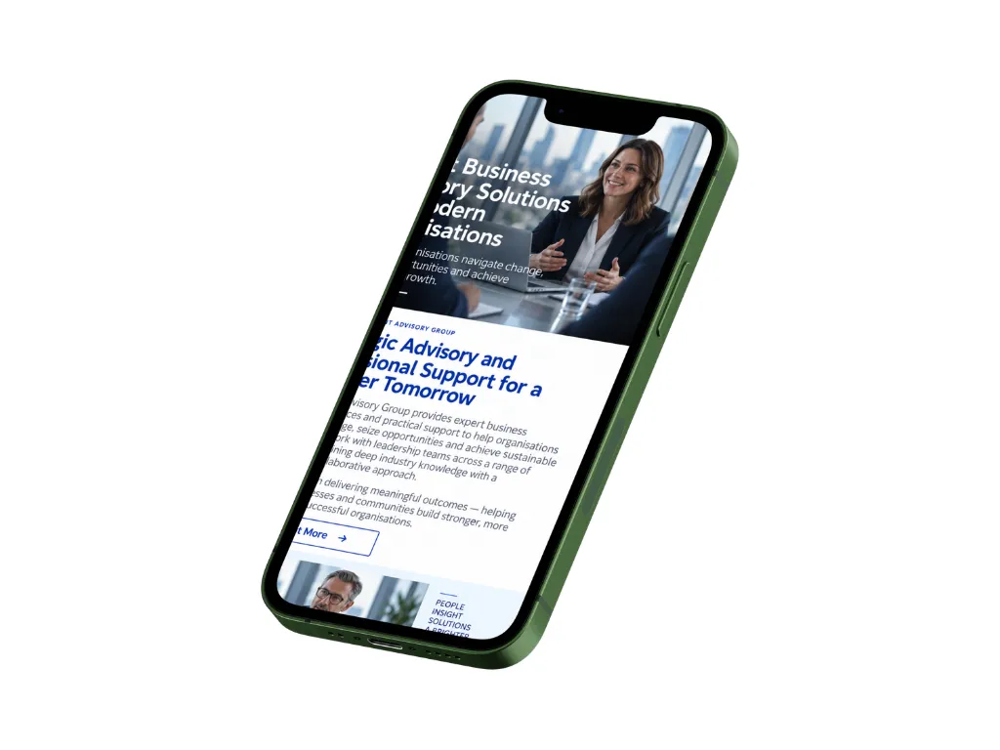
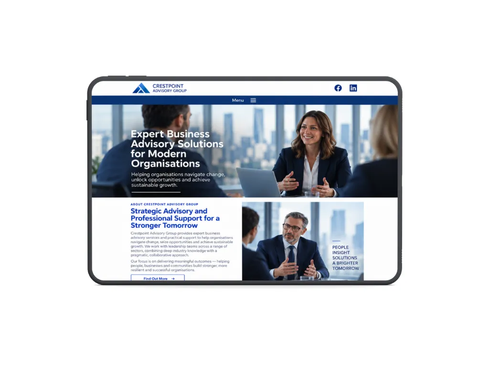
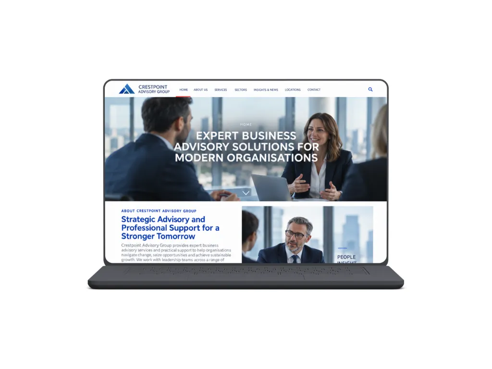

Clearer website content for a professional services business
How I helped:

Project overview
- Project focus
- Website content and structure
- Starting point
- Strong expertise, but unclear website messaging
- Primary audience
- Business owners and senior decision-makers
- Main objective
- Make services easier to understand and compare
- Delivery
- Content audit and rewrite
Making specialist services easier to understand
The business had plenty of useful information on its website, but the content had grown over time and no longer followed a clear structure. Some services overlapped, important information was buried in long paragraphs and the wording often reflected how the business worked internally rather than how clients looked for help.
The aim was to make the website easier to read without losing the expertise and detail that gave the business credibility.
The brief
Review the existing website content, remove unnecessary repetition and rewrite the key pages so visitors could understand the services more quickly and know what to do next.
Scope


Turning expertise into clearer website content
The project started with the existing content rather than replacing everything for the sake of it. I reviewed the main pages to identify repeated information, unclear terminology and places where important messages appeared too late.
I reorganised the content so each page led with the information most useful to prospective clients. Service descriptions were rewritten in clearer language, overlapping sections were combined and longer passages were broken into shorter, more focused sections.
I also introduced a more consistent tone across the site and rewrote calls to action so the next step was clear without making the pages feel overly sales-focused. The updated content was then added to the existing CMS so the business could continue managing it internally.
Key improvements

Start a similar project
If your website contains the right information but does not explain it clearly, I can help reorganise and refine the content so customers can understand your business more easily.
Tell me about your project